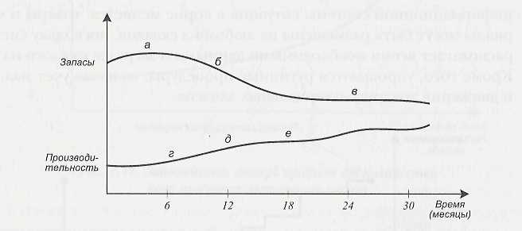

Совершенно очевидно, что улучшения не появятся ни и процессе внедрения управленческой системы, ни в момент ее запуска в промышленную эксплуатацию. Более того, улучшения вообще не появятся в одночасье, а будут «набирать силу» постепенно, в течение ряда месяцев после запуска (рис. 13).
 |
В части управления запасами изменения в первую очередь коснутся проблемы идентификации возможных недостач материалов в нужный момент (ситуация станет более прозрачной и прогнозируемой в связи с более четкой организацией управления запасами). Затем, за счет совершенствования планирования и составления производственных графиков, произойдет снижение общего уровня запасов. Наконец, в несколько более отдаленной перспективе упорядочится управление ценами на материалы, что также положительно скажется на размере запасов.
Параллельно происходят улучшения в управлении производством. Они также затрагивают сначала проблему нехватки материалов, затем упорядочивают систему оперативного управления производственными процессами и, наконец, приводят к формированию полномасштабной интегрированной диспетчерской системы управления производствен¬ными операциями.
Сроки улучшения во многом зависят от специфики производства, внедряемой системы,
стратегии внедрения, а также от готовности самого предприятия и сто руководителей
к необходимым преобразованиям. В любом случае период проявления позитивных результатов
растягивается на период от полугода до нескольких лет.